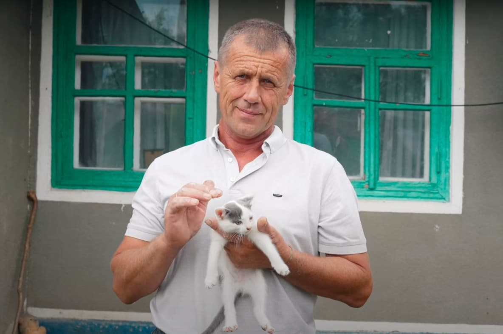

Розвиток попри війну: унікальні та мотивувальні історії підприємців з різних куточків України
Після повномасштабного вторгнення росії український малий бізнес опинився у вкрай складних умовах: у більшості українців суттєво погіршилась купівельна спроможність, що призвело до зменшення прибутку підприємців. Водночас економічна ситуація в країні була надто ризикованою, щоб брати кредити на покриття поточних потреб та масштабування, тож більшість підприємців сподівались перечекати складні часи та за можливості зберегти власну справу.
Натомість зараз, на 20-й місяць війни, усі в Україні вже відкрито говорять про відновлення та відбудову. Одним із локомотивів цих процесів повинен стати малий бізнес, який є основним наповнювачем бюджетів громад. Простими словами, без розвитку місцевого підприємництва не буде розвитку регіонів.
Можливим варіантом для місцевого підприємництва в пошуку ресурсів на розвиток і масштабування є грантові програми. Одну з таких започаткував Благодійний фонд "МХП – Громаді" у партнерстві з Українським ветеранським фондом Міністерства у справах ветеранів, її назва – #Варто "РобиТИ своє". За цією програмою ветерани та родичі полеглих захисників та захисниць мали змогу отримати від 500 тисяч до 1,5 мільйона гривень на відкриття та розвиток власної справи у сфері сільського господарства та агропромислового комплексу. Загальний бюджет конкурсу становив 15 млн гривень.
"Конкурс бізнес-ідей з підтримки локального бізнесу ми проводимо щороку з 2019-го. Водночас постійно реагуємо на нові виклики: 2020 року це були карантинні обмеження під час пандемії, зараз – наслідки повномасштабного вторгнення. Нині ми надзвичайно раді, що можемо допомогти нашими програмами та експертизою повернутися до життя тим, хто нас захищає, та їхнім родинам. Бо всі військові повинні знати, що їх чекають, а громади, де вони живуть, розвиваються", – коментує Тетяна Волочай, директорка Благодійного фонду "МХП – Громаді".
Підтримка ветеранського бізнесу – це позитивний крок як з економічної, так і з соціальної точки зору. Після повернення з війни наші герої мають змогу розвивати власну справу, створювати робочі місця, чим суттєво допомагати своїм громадам.
"Такі партнерства та колаборації, які здійснює Український ветеранський фонд, як наприклад з благодійним фондом "МХП – Громаді" – це про суттєве посилення ветеранського бізнесу та ветеранської стійкості в цивільному житті. Фінансування у межах конкурсної програми, створеної у партнерстві, отримали і фермерські господарства, і товариства з обмеженою відповідальністю, і фізичні особи-підприємці. Реалізовані ветеранами та членами сімей загиблих (померлих) ветеранів війни проєкти в межах конкурсу #Варто "РобиТИ своє" – це і про національну безпеку, і про продовольчу безпеку, і ключ до успіху ветеранських господарств. Здавалось би, що список переможців – то різні сфери господарювання, але всіх їх об’єднує спільний знаменник – любов до рідної землі; віра та впертість, з якими вони працюють, та надія, що їхня праця посилює Україну та наближає перемогу",
Українська правда. Життя зібрала п’ять історій переможців конкурсу з різних куточків України. Усі вони є прикладом, як попри війну та різні життєві потрясіння українці знаходять в собі сили започатковувати та розвивати власну справу, створювати робочі місця та відбудовувати Україну, розвиваючи свою справу.
Повернутись до життя після втрати сина
Микола Бондаренко з міста Липовець Вінницької області до війни працював у керівництві району, а також головним ветеринаром місцевого підприємства. 2022-й рік кардинально змінив його життя: на війні загинув син Сергій, потім у Миколи Бондаренка стався інсульт, через який довелось звільнитись з роботи.
Микола Бондаренко з сім'єю
Конкурс #Варто "РобиТИ своє", як каже Микола Бондаренко, фактично, повернув його до життя. Після отримання гранту він викупив у Липовці приміщення, де незабаром відкриється його власна ветеринарна аптека та клініка з рентген-апаратом та УЗД для тварин. Такі заклади для місцевих власників тварин та фермерів вкрай необхідні, адже зараз, щоб вилікувати тварин, доводиться їздити до ветеринарних клінік в облцентрі.
"Ремонт у приміщенні ми вже закінчили, ми на стадії відкриття. Маємо завезти медикаменти, касове обладнання, і аптека почне працювати. Наступний етап – клініка",
Також він поділився амбітними планами на майбутнє: наступного року спільно з місцевою владою планується відкриття притулку для тварин. Котів та собак багато, а подібного закладу ні в Липовці, ні в навколишніх громадах немає. Далі Микола Бондаренко хоче відкрити готель для тварин – аби люди, що їдуть з міста, могли тимчасово залишити своїх улюбленців.
Дивіться історію Миколи Бондаренка у відео-ролику.Франція на Львівщині: як заснувати равликову ферму
Світлана Прибило з міста Східниця, що на Львівщині, разом з чоловіком Іваном мали мрію – організувати ферму і вирощувати равликів. Але у плани втрутилась велика війна. У перші дні разом із сином Іван пішов зі зброєю захищати Україну.
Равлики
Світлана та її невістка Ольга почали вчитись жити в новій реальності: допомагали переселенцям, організували шелтер для внутрішньо переміщених осіб. Стрес та переживання вони заповнювали роботою і одного разу вирішили завести равликів на власній земельній ділянці в селі Бистриця Гірська, що неподалік.
"Чому саме равлики? Одногрупник мого чоловіка організував равликову ферму на багато гектарів. Вже кілька років він вирощує їх і відправляє на експорт в Європу. Іван часто бував в гостях у нього і також надихнувся цією ідеєю. Він планував, щоб страви з равлика продавались в синовому ресторані в Східниці",
Вона планувала у перший сезон зібрати 10 тонн равликів, вдалося 7,5 тонн – і це непоганий результат, як для початку. Але чоловік Світлани Іван, на жаль, цього не побачив – він загинув на фронті минулого року.
Попри страшне горе, яке принесла війна в родину Світлани Прибило, вона знайшла в собі сили розвивати равликову ферму. Цьогоріч, завдяки гранту Українського ветеранського фонду та БФ "МХП – Громаді", їй вдалося значно розширити площі висадки равлика. Зараз в планах родини – розвивати гастротуризм, створити місце, яке можуть відвідати батьки з дітьми, провести час на природі, а також спробувати равликів на смак. Як працює равликова ферма на Львівщині, розповімо у відеоісторії.
Як працює равликова ферма на Львівщині, розповімо у відеоісторії.Фермерське господарство воїна ЗСУ
Микола Ружицький із села Затишне, що в Тульчинському районі Вінниччини, працює на землі усе своє життя. До війни його родина вирощувала зерно та продавала його місцевим закупівельникам, однак це не вигідно через вкрай низькі ціни закупівлі.
Микола Ружицький
Після початку війни у 2022 році він був мобілізований, але згодом звільнився за станом здоров’я. Повернувшись додому, Микола Ружицький вирішив розвиватись як підприємець. У його планах було побудувати ферму на 20 голів свиней, а також розпочати виробництво кормів для тварин.
Завдяки перемозі в конкурсі #Варто "РобиТИ своє" Микола Ружицький втілює свою мрію. Він будує ферму вже не на 20, а на 100 голів свиней. На майбутнє у підприємця також є амбітні плани – побудова зерноскладу, купівля техніки та обладнання, зокрема олієпресу для виробництва олії з власного соняшникового насіння. На це є попит на ринку, а ціни на такі товари – доволі таки конкурентні.
Як чоловіку вдається розбудовувати бізнес, дізнавайтеся у відео.Поки власник захищає – господарство розвивається
Ігор Кумечко із села Максимівка Полтавської області на війні з 2014 року, коли пішов добровольцем. Його дружина Марина – адвокатка. В родині троє дітей, молодшій донечці Меланії нема і року. У 2018 році родина заснувала Фермерське господарство "Кумечко" і відтоді господарює на власній землі, а також орендує паї у місцевих учасників бойових дій.
Ігор Кумечко з сім'єю
Від початку повномасштабного вторгнення Ігор Кумечко знову захищає Україну зі зброєю в руках. А фермерським господарством опікується дружина. Вона, не полишаючи юридичну практику, займалась посівною кампанією та збором урожаю останні два роки.
Ігор Кумечко з дружиною
Саме Марина Кумечко ініціювала участь господарства у конкурсі від Українського ветеранського фонду та БФ "МХП – Громаді" #Варто "РобиТИ своє" . У зв’язку з війною сімейний бізнес значно ослаб: дизельне паливо та кошти родина віддала на потреби Збройних сил України. Але перемога в конкурсі дали фермерству ковток свіжого повітря. Родина Кумечок придбала рядову сівалку з турбодисками вартістю у 980 тис. гривень.
Детальну історію сім’ї дивіться у ролику.Відроджене господарство на Кіровоградщині
Ольга Олефіренко із села Бобринець Кіровоградської області втратила батька у 2015 році – капітан 1 рангу Юрій Борисович Олефіренко героїчно загинув під Маріуполем. Ольга залишилась разом з мамою, сестрою, дядьком та бабусею.
Ольга Олефіренко з сім'єю
Бабуся Ольги Олефіренко все життя пропрацювала в сільському господарстві і одного разу подарувала онуці на день народження два теляти та п’ять поросят. Також їй, як донці військового, що загинув, виділили два гектари землі, де раніше були ферми. Так Ольга почала займатись відгодівлею телят та свиней. Але оскільки утримувати тварин було дуже важко, – у приміщенні не було ні світла, ні води, а корми були дорогі, – у 2019 році бізнес довелося закрити, а телят – гуртом продати.
"Я щороку хотіла все відновити, але не було фінансових можливостей. Після початку повномасштабного вторгнення ми вирішили взяти трьох поросят собі на м’ясо, але різати не стали – вирішили розводити. Грант від Українського ветеранського фонду та БФ "МХП – Громаді" став ковтком свіжого повітря – я зрозуміла, що це допоможе мені втілити мою мрію. Так ми почали займатись відгодівлею та розведенням свиней",
За її словами, грант спрямований на покращення умов утримання господарства – у приміщенні вже встановлено вентиляційну систему, робиться ремонт, дерев’яна підлога. Господарі вже підвели воду та планують налаштувати автоматизовану систему подачі води тваринам. На наступному етапі планується покращення світла та облаштування автоматичної системи подачі кормів.
Як Ольга з родиною хоче втілювати плани в результат, розповімо у сюжеті.